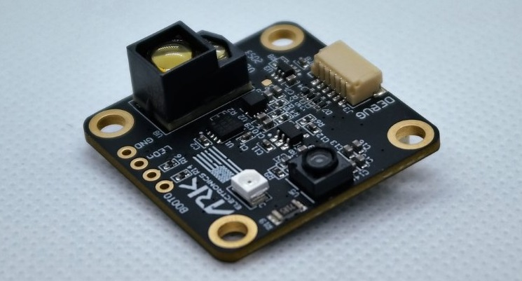

ARK Flow Open Source Optical Flow and Distance Sensor¶
[copywiki destination=”copter,plane,rover”]
The ARK Flow Open Source Optical Flow and Distance Sensor is an open source optical flow sensor including a Broadcom AFBR lidar which uses the CAN protocol to communicate with the autopilot. This can be used to improve horizontal position control especially in GPS denied environments.
{kind=link}
Where to Buy¶
The sensor is available from ARK Electronics.
Connection to Autopilot¶
The ARK Flow is connected to the CAN bus using a Pixhawk standard 4 pin JST GH cable.
Multiple sensors can be connected by plugging additional sensors into the ARK Flow’s second CAN connector.
The recommended mounting orientation is with the connectors on the board pointing towards back of vehicle, as shown in the following picture.
{kind=link}
Connect the sensor to the autopilots’ CAN port
Set FLOW_TYPE = 6 (DroneCAN)
Set CAN_P1_DRIVER = 1 to enable DroneCAN
Set CAN_D1_PROTOCOL = 1 (DroneCAN)
To use the onboard lidar:
Set RNGFND1_TYPE = 24 (DroneCAN)
Set RNGFND1_MAX_CM = 3000 to set range finder’s maximum range to 30m
Additional Notes¶
FlowHold does not require the use of a rangefinder
Performance can be improved by setting the sensors position parameters. For example if the sensor is mounted 2cm forward and 5cm below the frame’s center of rotation set FLOW_POS_X to 0.02 and FLOW_POS_Z to 0.05.